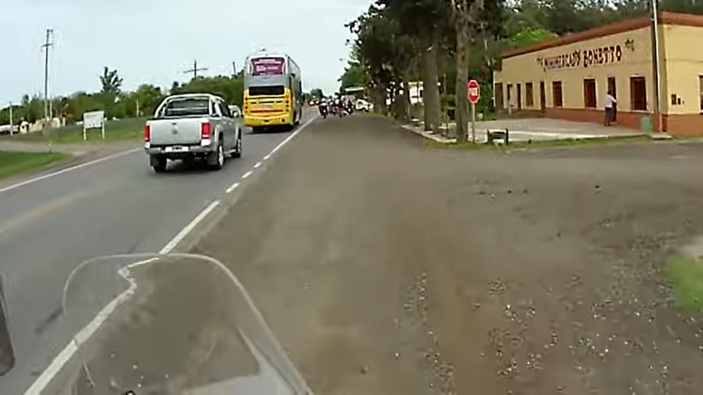
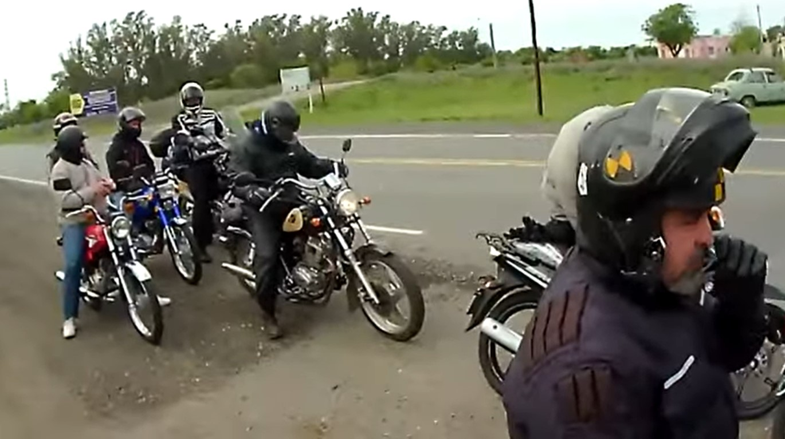
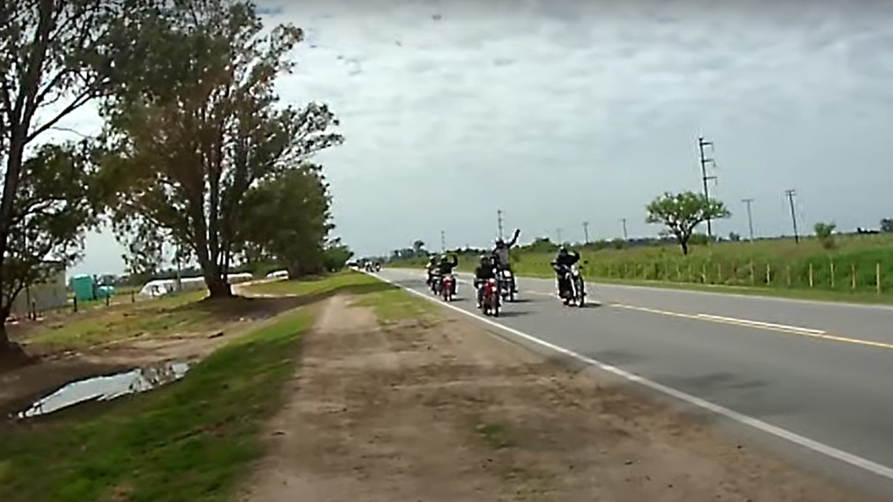

Mi blog
Inicio
Por qué Zontes?
Y ahora, cual?
Viajes
Contactémonos
Primer viaje. Destino Tandil. En esta primera experiencia partimos con 6 motos y luego nos acoplamos a un grupo de motoqueros que tenían nuestro mismo destino. Una experiencia inolvidable…



Previous
Next
Vean lo bueno que está la moto!! POR DIOS..